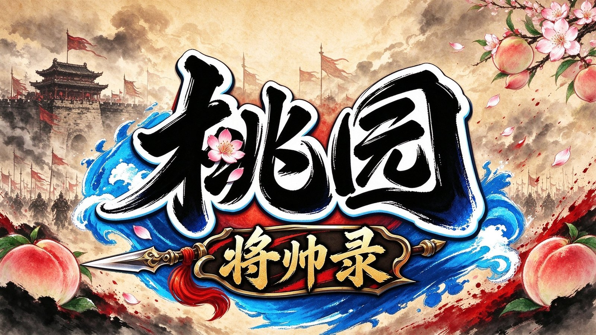

Q 版三国 · 回合策略
桃园：将帅录
Q 版 3D 幻想三国回合制：盾系、谋士、弓手、辅助、突骑、掠阵六类定位，胜负更多取决于阵容结构与站位，而不是单纯数值。三端互通。
定位盾系 / 谋士 / 弓手 / 辅助 / 突骑 / 掠阵
玩法回合制编队、推图、军团
节奏慢节奏，不靠数值碾压
平台安卓 / iOS / PC 三端互通
获取游戏 · 开服咨询
开荒路线
以桃园：将帅录的开局为例：先把资源花在对的地方，再谈阵容与站位。
01
开局资源
开局福利先领全，元宝与招募券留给关键池子，不乱抽。
第 1 天02
主线推图
编队盾系在前、输出在后。卡关先调站位，再补武将培养。
前期主线03
武将与战宠
资源集中给主力五人，属性加点与战宠培育同步跟上。
中期养成04
军团战
加活跃军团，军团战按站位表打，奖励反哺养成。
每周固定桃园：将帅录 · 全部 18 篇
开局资源、属性加点、武将培养、阵容站位、卡关排查、战宠培育与军团战：不靠数值，靠把每一步做对。
桃01前三天别乱花：开局的资源优先级回合制拼的是阵容完整度，不是单将数值。前三天的资源，决定你什么时候能凑出第一套能打的队。阅读约 2 分钟 · 4 节 · 更新于 2026-11-05桃02盾系、谋士、弓手、辅助：站位与出手顺序位置有限，六个定位不可能全上。谁站前排、谁先手，比谁星级高更影响胜负。阅读约 2 分钟 · 3 节 · 更新于 2026-11-05桃03战宠不是装饰：先练能上阵的那一只战宠等于多一个位置。资源有限时，一只练满胜过五只半成品。阅读约 2 分钟 · 3 节 · 更新于 2026-11-05桃04战宠从抓到毕业：五步把一只练到能上场选亚种、抓、洗、合、打书，每一步都有能省钱的做法。零氪也能养出一只能上场的毕业宠。阅读约 4 分钟 · 6 节 · 更新于 2026-11-05桃05不卷数值怎么玩：慢节奏的资源账这游戏主打策略、不靠数值碾压，意味着耐心比充值更值钱。阅读约 2 分钟 · 3 节 · 更新于 2026-11-05桃06武将培养的三条线：等级、星级、兵种三条线各有各的卡点。先升哪条，取决于你现在卡在哪一环。阅读约 2 分钟 · 4 节 · 更新于 2026-11-05桃07五大属性与 12 条转职分支加点每级 5 点潜能，加点不是玄学。先把定位想清楚，再决定这 5 点往哪放。阅读约 3 分钟 · 7 节 · 更新于 2026-11-05桃08推图卡关排查：站不住、打不动，还是节奏慢卡关别急着升级。先看战报，判断是哪一种失败，再对症下药。阅读约 2 分钟 · 4 节 · 更新于 2026-11-05桃09军团战：掠阵位与先手权的取舍军团战不是拼总战力，是拼谁先把对面的核心打哑。阅读约 2 分钟 · 4 节 · 更新于 2026-11-05桃10每日 20 分钟：固定动作清单与先后顺序回合制最容易犯的错，是把时间花在「看起来有收益」的事上。每天固定做完这五件事，剩下的时间再谈养成。阅读约 2 分钟 · 4 节 · 更新于 2026-11-06桃11装备词条与宝石：先堆哪一项，后堆哪一项同样是紫装，词条错位就差一档。顺序应该是：先定武将定位，再决定堆攻击、暴击还是速度。阅读约 2 分钟 · 5 节 · 更新于 2026-11-06桃12起号方案：五张、十六张、三十五张怎么选起号的核心不是充得越多越好，而是每一档的资源能不能接上你的养成节奏。三档方案各管一段进度，先看清每档给什么。阅读约 2 分钟 · 4 节 · 更新于 2026-11-06桃13站位定胜负：战斗规则完整拆解回合对战不止比输出高低。站位、位移、连击击飞和 PVP 数值修正共同构成整套战斗体系，熟悉规则才能把阵容打出上限。阅读约 3 分钟 · 5 节 · 更新于 2026-11-06桃141-40 级怎么练：练级点与每日任务1 到 40 级是一条清晰的路线：跟任务走、按等级换练级地图、每日固定几件事做完。转职节点和每日清单都在这里。阅读约 4 分钟 · 4 节 · 更新于 2026-11-06桃15抓宠物全指南：符箓、成功率与蹲点表抓宠物的流程很简单：把野怪血量压低，扔降魔符箓。难的是按稀有度选对符箓、按刷新时间蹲对点位，这份指南一次说清。阅读约 3 分钟 · 5 节 · 更新于 2026-11-06桃16关羽全玩法：突骑爆发流与反击流关羽是物理爆发收割型核心，核心机制是群体 AOE 加斩杀终结，不是站桩持续输出。前期养成到后期毕业配队，两条分支一次讲清。阅读约 3 分钟 · 6 节 · 更新于 2026-11-06桃17阵容模板：0 级成型队到 40 级毕业零氪微氪直接抄这套：刘关张加蔡文姬的经典模板，从 0 级开荒一路用到 40 级毕业调整，加点和技能优先级全部给全。阅读约 3 分钟 · 4 节 · 更新于 2026-11-06桃18宠物养成日常：升级、资质与资源规划抓到好胚子只是开始。每天喂什么、铜钱花在哪、什么时候换下一只，这份养成账帮你把资源花在刀刃上。阅读约 3 分钟 · 4 节 · 更新于 2026-11-10